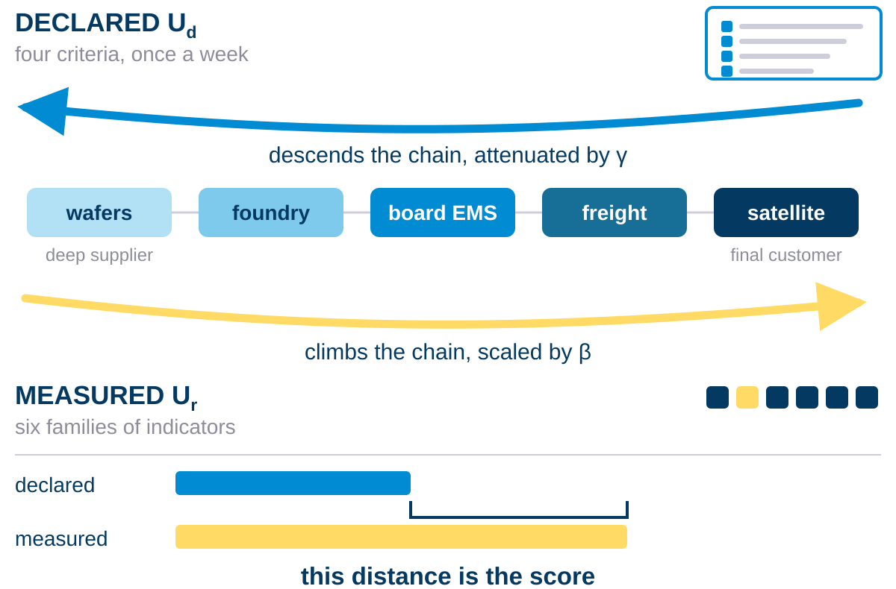
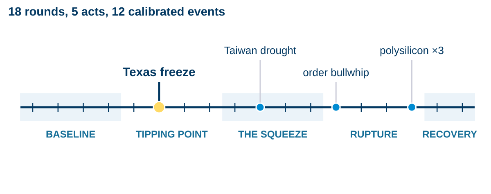

Measuring the gap between declared and real urgency
Everything is green. The line stopped anyway.
A line stops. In the room where somebody should have escalated an hour earlier, every indicator on the wall is green.
Ask the team afterwards and you get the same two answers, in every industry. Everything has been urgent for months, so nothing is. And the thing that actually broke was the thing nobody flagged, because the person closest to it believed they had it in hand, and had already escalated once too often to spend the credibility again.
Those are two different failures with opposite signs, and they do not cost the same. Panic wastes money and is recoverable. Silence is free, and it is not.
So the score weighs them differently: under-declaring a risk is penalised 2.25× harder than over-declaring it, using the loss-aversion constant Kahneman and Tversky measured rather than a number chosen in-house.
The dashboard was not wrong. It was measuring the wrong thing.
Everyone scores the world. Nobody scores what we say about it.
Before building anything: surely someone measures this already. They do not.
The research literature models how disruption ripples across supplier tiers. The commercial platforms map multi-tier networks at a scale no prototype reaches. All of them score physical reality. None of them records what the human in charge actually declared, so none of them can compare the two.
That is the empty column, and filling it is the objective: elicit the declaration weekly without exhausting the operator, propagate it across the network, and measure the distance between what is said and what is true.
Everyone scores the world. Nobody scores what we say about it.
Two flows, one score
Real urgency comes from six families of operational indicators, treated as six smoke detectors. Any one of them saturating is enough to sound the alarm, because on a factory floor one bottleneck stops the whole line.
Averaging the six would hide the one case that matters. When a single family is at maximum and the other five are quiet, their average lands near 0.17: on a ranked dashboard that supplier looks calm, while its line has in fact already stopped. Combining the six as independent alarms instead returns 1.00, and the supplier surfaces where it belongs.
Declared urgency comes from the manager, through a four-criterion weekly questionnaire that refuses contradictory answers. The two signals enter the chain at opposite ends and travel towards each other. The distance between them is the score.
One saturated detector has to trip the alarm. A mean would have buried it.

A score you can argue with
Put a number on somebody's judgement and they will contest it, usually within ten minutes. A score that cannot answer back does not survive its first meeting.
So every score decomposes exactly, criterion by criterion and block by block, with no residual left over, and every change carries its own record: who entered it, when, and under which rule. Dispute a 46.5 and the tool replies term by term, on screen, with the trail underneath.
SupplyScore runs today and is still under active development: a live dashboard, a weekly review cycle, network simulation, and an explanation page behind every figure.
A score nobody can interrogate is a score nobody uses.


HÉLIOS: the chip crisis, replayed blind
To test it, the 2020–2022 semiconductor shortage was rebuilt as an eight-company, eighteen-round serious game, and the players were never told which crisis they were living through.
Authentic public series feed the physical side, alongside twelve calibrated events pinned to dated real ones: the Texas freeze, the Renesas fire, the Suez blockage, the Taiwan drought, the Malaysian back-end shutdowns, the autumn bullwhip.
Eight managers, one programme, and a chain that tightens round by round. Each of them sees only their own corner of it, and each has to say every week how worried they are.
The crisis was real. Only the names were changed.


Perception became a measured quantity
The campaign produced the first evidence that the gap is measurable, and that it carries information nobody else is collecting.
Contagion is the headline. Managers with nothing physically wrong at their own site still escalated on the rounds when the crisis made the news. Alert inflation, caught in the act and given a number for the first time.
The network layer found the chokepoint on its own, and the forecast layer ranks the right supplier first three times in four, one round ahead.
Eighteen rounds were enough to show the signal exists. What it needs now is volume: more campaigns, on more networks and more crises, each one sharpening the next.
Perception is now a measured quantity, not a mood.- Run more campaigns, on other networks and other crises, and recalibrate the model on the data each one produces.
- Fuse the second brick: warehouse volumetry read from satellite imagery, so capacity is observed rather than declared.
- The end goal: a language model fed by these forecasts, answering in the moment rather than once a week, and stating what is about to happen with the probability attached.